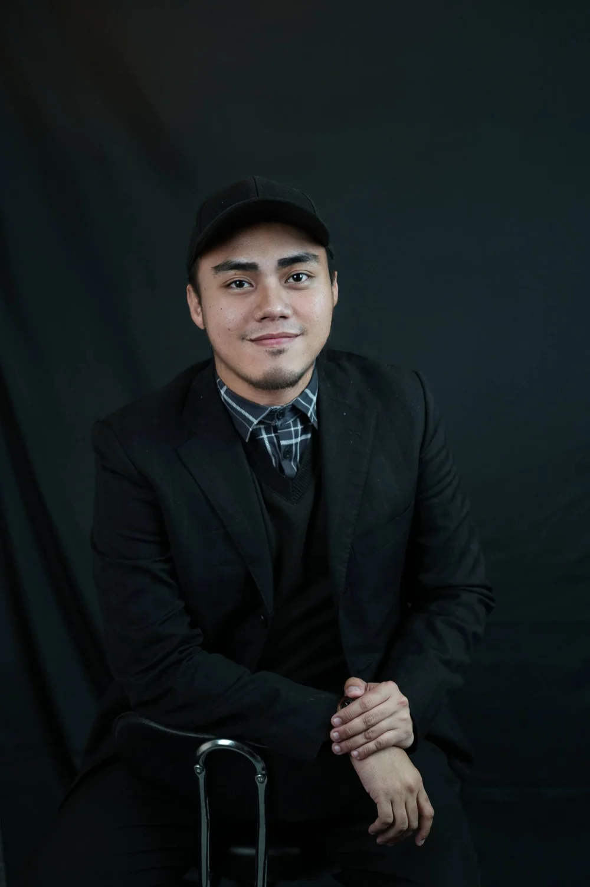
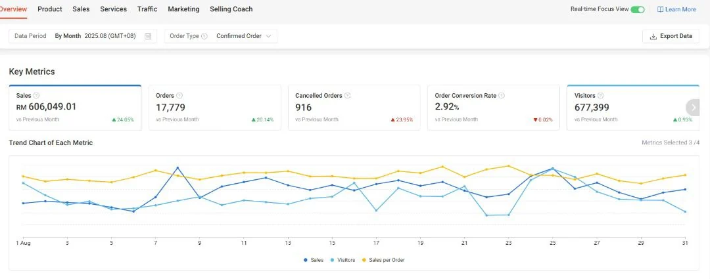
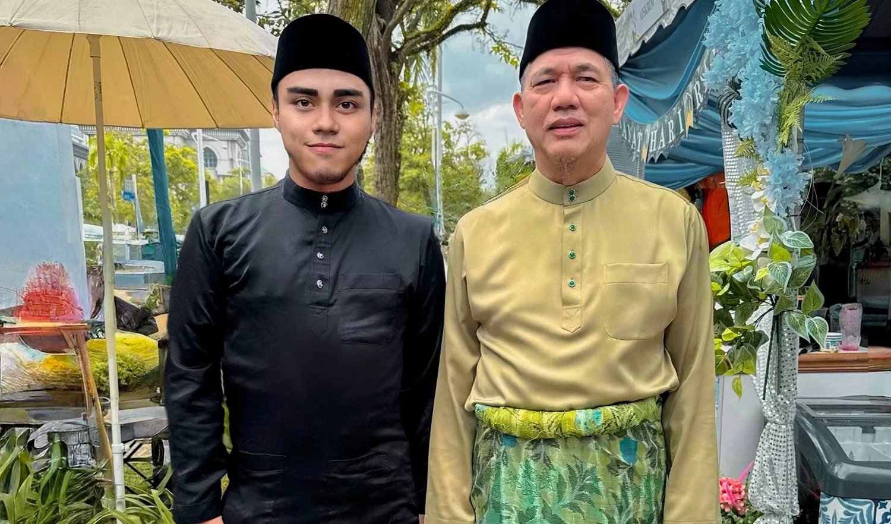
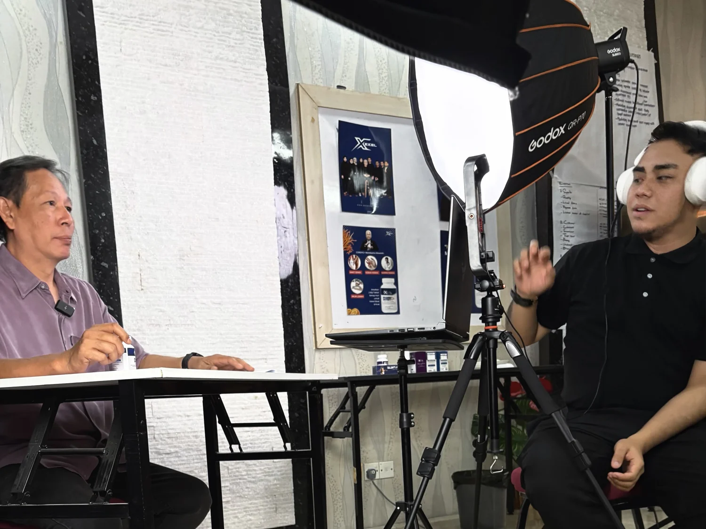
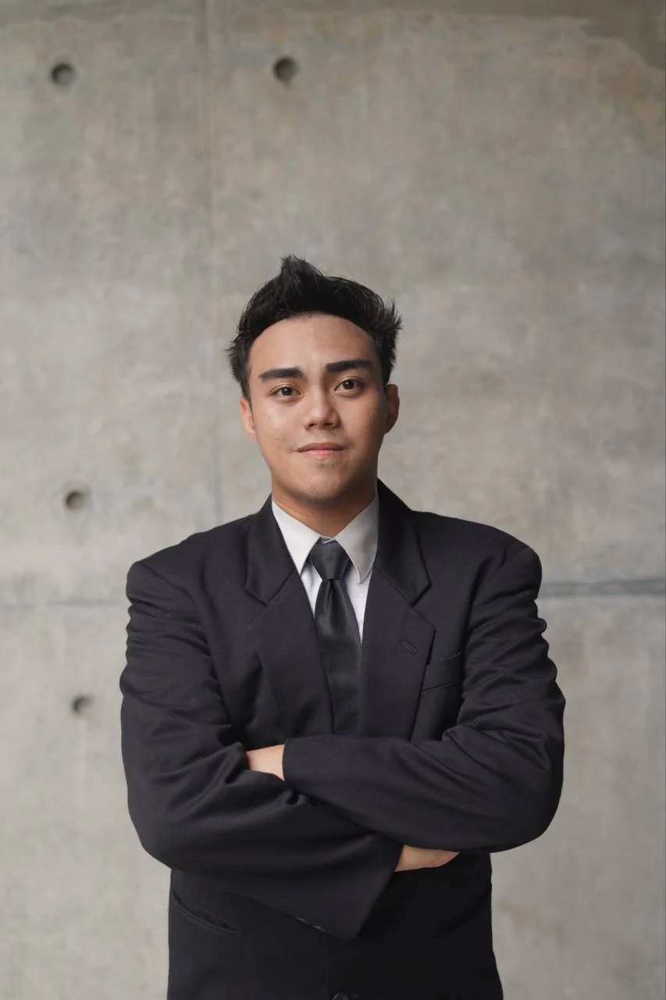

Integrated strategy
Aligning messaging, budget and business goals for comprehensive campaigns.
Marketing strategist, creative content specialist & digital product builder. I connect business growth, creative execution and technology to turn ideas into experiences that work.

Strategy, performance, media and business development.
Websites, web applications, product experiences and automation.
From brand positioning to conversion optimization, I align communication, creative and commercial objectives to drive sustainable growth.
Aligning messaging, budget and business goals for comprehensive campaigns.
Content strategy and production for engagement and brand storytelling.
Turning metrics into decisions through analytics, testing and KPI tracking.
Driving revenue through strategic partnerships and negotiation.
Conversion funnel analysis, audience refinement, creative testing and traffic strategy helped grow monthly sales from RM488K to RM606K.


 01
01Marketing strategy, partnerships, collaborations and brand management.
Read case study ↗ 02
02Refining targeting and budget allocation using attribution analysis.
Read case study ↗
03Public figure branding, social media strategy, event coverage and reputation.
Read case study ↗ROLE / PERFORMANCE MARKETING & GROWTH STRATEGY
This campaign focused on scaling an online commerce operation using data-driven optimization across traffic, conversion and retention levers.

ROLE / MARKETING COORDINATOR & STRATEGIST
At Blitz Sdn Bhd, I led the development of integrated marketing strategies that significantly increased brand visibility.
ROLE / PERFORMANCE ANALYST
Working remotely for JT Jaya, I focused on high-level data analysis to optimize ad spend.
ROLE / SPECIAL OFFICER (MEDIA)
Managed the public profile of a Melaka State Assemblyman (ADUN).
Social-first vertical content and commercial product storytelling, made for attention and engagement.

01 / SHOWREELSOCIALTikTok, Reels & Shorts
Commercial video
Commercial video
Commercial video
I bring a business and marketing perspective into digital product building: user journeys, responsive interfaces, practical workflows and automation.
Responsive websites and purpose-built web experiences.
Product flows, interactive interfaces and role-based experiences.
Connecting workflows, data, integrations and notifications.
A university-focused ride-matching project exploring a clearer way for passengers to request rides and drivers to respond.
Project overview; the demonstration is illustrative and does not represent a live booking service.
STEP 01 / REQUEST
Try a sample passenger journey.
A responsive, accessible website built to bring two professional identities together. Real case studies, lightweight interactions and a simulated product walkthrough in a single experience.
Explore the experience ↑
I am a marketing strategist, creative content specialist and business development professional with experience building growth strategies, managing cross-functional teams and driving performance-led initiatives.
My strength lies in aligning communication, marketing and business objectives. My campaign experience spans Malaysia and Singapore, combining creative direction with data analytics to support ROI.
I'm also building digital products and web experiences, bringing a growth-oriented mindset into how technology is designed and used.
Open University of Malaysia (Part-time)
National University of Malaysia (UKM)
Kolej Poly-Tech MARA Bangi · CGPA 3.81
Whether you're looking for a marketing strategist, a creative collaborator or someone to build a digital product, I'd love to hear from you.
zainthworkspace@gmail.comMalaysia · Singapore · Southeast Asia